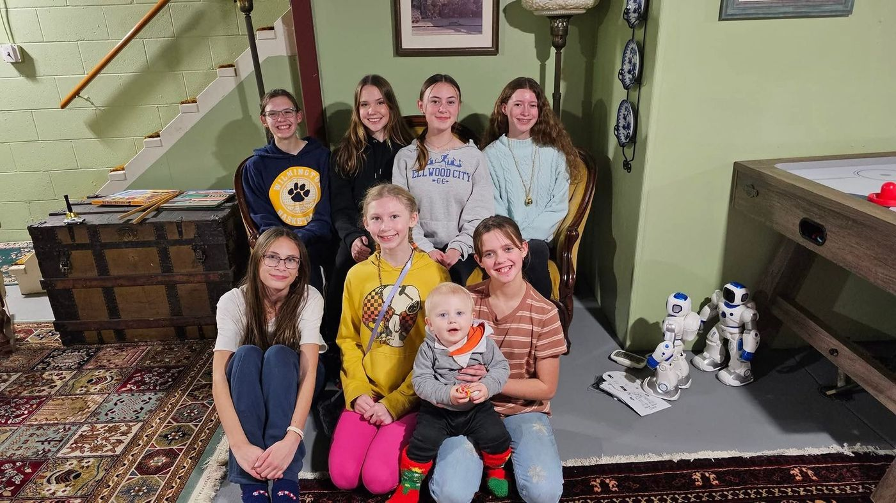

Hospitality with a heart
An 1873 Victorian, a family who restored it, and 37 years of guests who keep coming back.
A house in the heart of Beaver
Built in 1873, The Todd House is a fully restored French Second Empire Victorian home that offers warmth, comfort and character, conveniently located in the heart of Beaver. It is a family-run bed and breakfast, and we take pride in our quality of service and our personal attention to every guest.
Our well-equipped bedrooms — some with private baths — provide ample space and privacy for individuals, couples and families. Wake up to a homemade breakfast before exploring Beaver's many attractions. When you return, relax and recharge in our cozy living areas.
The restoration has been recognized by the Historic Beaver Association, and we are members of the Beaver County Chamber of Commerce, the Beaver Area Chamber of Commerce, the Historic Society of Beaver and the Merrick Art Gallery. But the part we're proudest of is simpler than any of that: we provide a warm and friendly place to call home while you visit Beaver, Pennsylvania.
— Jim & Linda Todd
1873
The house was built
1987
Year established
6
Guest rooms & suites
37
Years of innkeeping
Jim & Linda Todd
Jim and Linda have run The Todd House since 1987 — long enough to know which room suits which guest, which floorboards creak, and what to cook when someone arrives cold and tired at nine at night.
Everything served at breakfast is sourced locally in Beaver. That isn't a marketing position; it's what happens when you have lived in a town this long and buy from your neighbors.
They answer the telephone themselves, between 8:00 AM and 10:00 PM.

- Historic Beaver Association
- Beaver County Chamber of Commerce
- Beaver Area Chamber of Commerce
- Historic Society of Beaver
- Merrick Art Gallery
Frequently asked
Yes. Our downtown Beaver location puts us within easy walking distance of numerous dining options, so you have a real choice of restaurants without moving the car.
A traditional American breakfast, served in a formal setting in the dining room. There is no dress code — come down comfortable. Let us know in advance about any dietary needs and we'll take care of them.
Yes — there are several parks in the immediate vicinity of the house, all within an easy walk.
Two blocks. It is one of the reasons guests researching family history choose to stay with us.
We are 22 miles from Pittsburgh International Airport — a straightforward drive of roughly half an hour.
Approximately 34 miles. Plenty of our guests use The Todd House as a quieter base for a Pittsburgh trip.
There is. We sit at the confluence of two rivers, with nearby parks besides — good water within a few minutes of the front door.
Yes. The common rooms have hosted weddings, bridal and baby showers, tea parties, reunions and birthdays. The dining room seats ten and the courtyard seats twenty at five shaded tables. Tell us what you have in mind and we'll be straight with you about whether the house suits it.